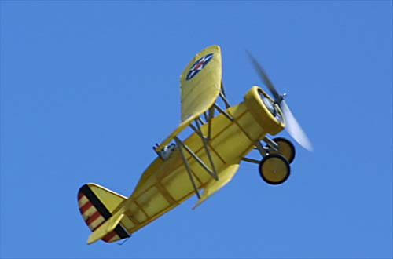

|
This wonderful model is a typical "Dime Scale" model. These kits were sold years ago for ten cents, hence the name, and are very popular designs even today. The inevitable nostalgia appeal, as well as the simple designs and construction should keep Dime Scale models flying for years to come.
Tom built this Boeing Biplane from plans, and added a foam Coyote as a pilot. It flies very well, and always brings a smile for the fans. |

Copyright 2001, Thayer Syme. All rights reserved